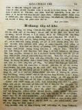

Languages
台文
｜
中文
｜
日本語
｜
English
字體
小
｜
中
｜
大
首頁
/
白話字數位典藏
白話字數位典藏全文檢索
查詢模式
選擇年代
清國時代(1885-1895)
日本時代(1895-1945)
戰後(1945-1969)
1885-1895
1896-1905
1906-1915
1916-1925
1926-1935
1936-1945
1946-1955
1956-1965
1966-1969
1970-1980
1980-1990
1990-2000
2000-2010
2010-
選擇文類
詩
散文
小說
戲劇
傳記
選擇作者
陳清忠
陳清義
編輯部
柯設偕
吳天命
明有德
偕叡廉
周天來
劉華義
王守勇
林茂生
陳添旺
王占魁
柯維思
賴仁聲
陳瓊琚
雪峰逸嵐
吳清鎰
郭水龍
蕭樂善
許水露
葉金木
陳金然
章王由
廖得
鄭連坤
潘道榮
楊士養
梁秀德
劉約翰
周淑慧
高金聲
林燕臣
黃六點
蔡愛義
許有才
主筆
巴克禮
陳鳩水
郭朝成
張基全
陳明清
陳能通
拾穗生
顏振聲
卓恆利
傳道局
胡文池
劉主安
鄭兒玉
吳牧師娘
徐春生
陳溪圳
Google Search
Yahoo Search
全部
刊名
標題
標題(教羅)
全文
全文(教羅)
作者
第51頁，共108頁(共2,148筆資料) 0.61621999740601sec
1
...
49
50
51
52
53
...
108
To Page
GO
文字列表
圖文列表
排序
日期
文類
刊名
作者
影像
[1925-7 芥菜子 文類-散文 作者-吳牧師娘/Gô͘ Bo̍k-su-niû]
(2)
教示小兒ー積成在佇家庭 [ KÀ-SĪ SIÁU-JÎーCHEK-SÊNG CHĀI TĪ KA-TÊNG ]
教示小兒 積成在佇家庭
[1925-7 芥菜子 文類-散文 作者-徐春生/Chhî Chhun-seng]
(3)
七個災禍（馬太23: 13-36.） [ CHHIT-Ê CHAI-Ē (Má-thài 23: 13-36.) ]
七個災禍（馬太23: 13-36.） 這站ê聖冊是耶穌責備遐个假好ê經學士kap法利賽人。今仔日也是thang做叫醒咱ê精。 佇耶穌ê時代，猶太國有3个教派，1.撒都該，2.伊事年，3.法利賽。 經學士，舊翻譯叫做讀冊人；in是解明舊約，thang講是註解ê先生；in kap祭司長老，有入法利賽教，所以有時講經學士，也thang指法利賽。法利賽3字就是希伯來語，意思是離別；就是離開眾人，家己立教派。 論in ê教徒kap教理寫佇下面，thang做參考：－ A. 教徒。 (1)自誇家己&e...
[1928-8 台灣教會報/芥菜子 文類-散文 作者-陳溪圳/Tân Khe-chùn]
Thái-ko 的得著清氣 [ Thái-ko ê tit-tio̍h chheng-khì ]
「Thái-ko 的得著清氣」 陳溪圳 1928.08.01 521卷(芥菜子第30號) p.17 馬偕病院治療平常的患者以外，每拜六兩日，另外有teh治療thái-ko 的患者，已經幾若年久。戴博士佮同勞者有體基督的心，特別用疼情，友情，用熱心佮小心teh共in治療，所以成績真好，患者那加添，現時每禮拜有百外人來就伊。閣再呂阿家傳道師亦真歡喜做in 的朋友，慇勤佮in研究基督的福音，紲教in白話字。對今年頭戴博士佮呂傳道有設法每禮拜日佮熱心欣慕主的 thái-ko患者七八--个聚集守禮拜；對in 的同情佮疼痛，予人所厭賤thái-ko 的兄弟揣著逃閃得著安心佮活動。紲chho...
[1954-6 台灣教會公報 文類-散文 作者-陳溪圳/Tân Khe-chùn]
講壇：上帝是疼 [ Káng-toâⁿ:Siōng-tè sī thiàⁿ ]
上帝是疼(接5月第9面)(牧師：陳溪圳)。1954. 06, no. 786, pp.9上帝是全能，總是kan-ta全能毋是伊的特性；移山倒海毋是伊所歡喜。上帝是全智，總是kan-ta全智也毋是伊的特性。因為記載講，「我欲滅無智慧的人的智慧，也欲棄拺聰明的人的聰明。」「上帝是疼，」是盤過全能，全智以上的疼。這个疼是伊所歡喜，所愛，所誇口的榮耀。因為疼才是上帝的本體，權能是伊的衣服（詩篇65:6）。智慧是伊的裝thāⁿ若定。假使智慧佮權能共伊提走，伊猶原是天爸上帝的存在，猶原也是萬物的頭。上帝是疼，毋是權能，毋是智慧，總是對伊的疼有紲顯出伊的全能佮全智。若對上帝共伊除去權能佮智慧，kan-ta賰...

[1925-7 芥菜子 文類-散文 作者-陳溪圳/Tân Khe-chùn]
(4)
毋通長短跤 [ M̄-Thang Tn̂g-Té-Kha ]
毋通長短跤 現時人若講主日學，就想是囡仔，若講佈道，就想是大人；按呢想也果然續按呢teh實行；其實基督ê意思kiám毋是ài主日學大人著在內，佈道囡仔著有份mah (馬太28:19-20.) 主日學kap佈道，形狀kap所做ê工有各樣，若是目的相款，平平是beh chhōa人到基督得著救，不過一爿是宣教的，一爿是教育的，教會若thang比並做身軀，就佈道kap主日學thang講教會ê兩支跤。教會teh求上帝國臨到求人ê得救，卻是對聖神kap恩典，總是彼个機關thang講著對佈道kap主日學，就是宣教k...
[1954-5 台灣教會公報 文類-散文 作者-陳溪圳/Tân Khe-chùn]
上帝是疼 [ Siōng-tè sī thiàⁿ ]
上帝是疼（牧師：Tân Khoe-chùn）1954. 05, no. 785, pp. 9宗教是teh論起神佮人的關係，也彼个關係是甚物款來決定。閣彼个宗教的教義也是根據佇信上帝是甚物的信仰出來的；所以神的教義若錯，所有的教義就錯，神的教義若對，就所有ê教義是真。若是咱所信的神是獨一的主宰，全能，全智，至聖，公義，疼痛的天父。疼的概念是佔基督教全體，á是聖經全部的中心地位。聖經講，「現今所存三項其中第一大的是仁愛。」閣講，「無疼的毋捌上帝，因為上帝是疼。」總是這个疼(性愛)，á是肉親的的疼(情愛)，á是彼款社會的的疼(友愛)。「上帝是疼，」是屬佇宗教的，聖義的，包含神聖公義的疼。實在無話通說...
[1928-7 台灣教會報/芥菜子 文類-散文 作者-蕭樂善/Siau Lo̍k-siān]
禮拜的感想 [ Lé-pài ê Kám-sióng ]
禮拜的感想 蕭樂善 1928.07.01 520卷(芥菜子第29號) p.19-20 做禮拜，有所在進步，頭到尾真莊嚴，親像天頂的集會；總是有所在較凊彩，無啥物敬虔，無啥物同心的款，致到失落伊的本色。這是真要緊的問題。現時佇德國的教會不止掛慮做禮拜的事，看按怎通換新，抑是較深沈，較豐富。佇咱本島的教會袂免得有像款的掛慮。 佇教會中常看見較愛外皮的事，致到有人講，咱新教若來chham淡薄舊教的禮式較好；總是這不止有通想。咱若加添外皮的事，毋但驚了袂進步，驚了會退步。Rudolf Otto講，「若凊彩掛慮愛予禮拜較心適，會予有實在宗教的要求的人失志。」咱新教的禮拜是較oh，比對重外皮...
[1937-1 台灣教會公報/芥菜子 文類-散文 作者-蕭樂善/Siau Lo̍k-siān]
信仰的公園 [ Sìn-gióng ê Kong-hn̂g ]
信仰的公園 蕭樂善 1937年1月622期 26-27 I. 對信到佇信。 1. 今年佇印度所賣出的聖經，比舊年有加賣8萬7千本。逐所在有熱心咧賣聖經的人，雖罔勞動者，拖車的人in毋捌字，也是濟濟買聖經叫捌字的厝邊讀予in聽，來得著教示。賣聖經的人，若拄著毋捌字的人，in也是愛賣in。紹介幾若位寶貝的教示，in聽了愛閣紲接來得著in所未捌得著的消息。賣聖經的人，對細漢是佇印度教來成長，所以in佮宮廟不止有緣故。常常去宮廟賣聖經；有時大鬧熱的時in也到宮廟，拄著濟濟朋友熟似人，in對in傳上帝的拯救，也講起in早時猶原到宮廟熱心信印度教。上帝怎樣chhoā in來信靠...
[1937-4 台灣教會公報 文類-散文 作者-蕭樂善/Siau Lo̍k-siān]
信仰的公園 [ Sìn-gióng ê Kong-hn̂g ]
信仰的公園 蕭樂善 1937年4月625期 22-23 1.「予人的比對人提的較有福氣」(行傳20：35)。世間人攏是愛經驗對人得著的歡喜。總是上帝所予人第一大的歡喜是囥佇予人。伊有歡喜伊實在有得著。 2.進化論的Tàn-lí-bûn ，佇1883有訪問Tierra del Fuego 。看彼位的人非常無開化，宛然親像厝內所飼的雞仔；總是佇36年後伊閣去遐的時，看見大的變化，伊不止gông-ngia̍h。彼个變化就是對福音。伊才知，福音的力比自然進化的力加非常大。伊就寫批予倫敦宣道會講，「恁若揀我做恁的名譽會員，我是真榮光。批內我寄25磅的金，愛做宣道會的路用」...
[1937-8 台灣教會公報 文類-散文 作者-蕭樂善/Siau Lo̍k-siān]
上帝甚物時幫贊咱 [ Siōng-tè sím-mi̍h sî pang-chān lán ]
上帝甚物時幫贊咱 蕭樂善 1937年8月629期 25-26 捌有一个信者，講伊真久聽候看上帝的力偌大，到今仔日攏袂通經驗著，致到聽見上帝是全能，心肝不止疑ngái。這檢采有影，也應該是按呢才著；因為上帝的力，毋是平常的力，毋是粗俗的力，是高貴的力。隨便照家己所想會通快快經驗的是較無合。總是咱知，有濟濟信徒逐時逐刻咧經驗著上帝的能力無斷。今仔日咱大家愛參加佇遮的不時經驗上帝的能力的人的中間。彼个精差，毋是上帝分別人，是咱的信仰佮咱的精神的精差。 要緊咱著知一項：上帝欲幫贊人，毋是伊家己一个的工，是協力。也毋是專專對伊全能的手出，是對佮伊所創造的物相佮tì曉的氣力。所以咱...
[1937-9 台灣教會公報 文類-散文 作者-蕭樂善/Siau Lo̍k-siān]
徹底十字架的精神的生活 [ Thiat-té Si̍p-jī-kè ê cheng-sîn ê Seng-oa̍h ]
徹底十字架的精神的生活 蕭樂善 1937年9月630期 22 教會不時講起十字架，差不多毋捌一禮拜無聽見十字架三字。這是著。總是咱是干焦用做基督教的記號nā-tiāⁿ，按呢是空空。咱真勇敢提起十字架；總是咱較無好膽將十字架提來囥佇咱的生活。咱有一个真出名的缺點，就是好膽喝進，大聲傳主的十字架；總是攏無看見伊有十字架的精神的生活。抑是若聽見犧牲，奉獻，著放拺家己，用清氣的心綴主就看見咧勼，那勼。若無干涉我的生活，我就好膽傳十字架；總是若干涉著伊的生活差不多紲走。這怎樣會通叫做屬十字架的人？常常看見第一出力，第一大聲傳主的話，第一違反聖經的教示，佮聖經的精神差真遠。對歷...
[1937-10 台灣教會公報 文類-散文 作者-蕭樂善/Siau Lo̍k-siān]
三年運動特記 [ Saⁿ nî ūn-tōng te̍k-kì ]
三年運動特記 蕭樂善 1937年10月631期 27 1. 時代的勞碌。教會欲有健全的發達，的確著對讀，對研究。總是今仔日的教會員不止欠缺研究心。熱心是愛省工，省費氣，省想的熱心，這款的熱心的確袂徹底，也袂進步。對奮興的熱心，到今仔日啥款？已經冷淡，也有的咧冷淡，這毋是冷，是發展無路的熱心。人若有研究心，愛進步的心，不時有熱心；也伊熱心會進步，會較實在。咱干焦熱心佈道，也無熱心佇研究聖經，這是奇怪的熱心。 今仔日咱第一合時代的勞碌，就是靜靜搜揣聖經。檢采咱一時袂通有大的研究心，猶過也著那鍛鍊，逐个有讀佮想的力，予咱的時代緊入佇新的時代，一層的進步。 2. (...
[1937-10 台灣教會公報 文類-散文 作者-蕭樂善/Siau Lo̍k-siān]
甚物款的疼 [ Sím-mi̍h khoán ê Thiàⁿ ]
甚物款的疼 蕭樂善 1937年10月631期 28-29 基督徒著有甚物款的疼？有人想上帝是疼，咱也著萬事用疼來解決。「凡事著佇仁愛來行」。攻擊不義、歹的計謀是無疼，無予人歡喜是無疼。遮的話，常常咧聽。 疼痛是咱的宗教的中心，是永遠的真理。信徒逐个知疼痛的要緊；總是世間人的疼佮耶穌的疼毋是siāng款。對動物到佇人，攏有疼的天性。世間第一歹的人，也疼遐的疼伊的人。 保羅雖罔講，「凡事著佇仁愛來行」，這毋是主張一般的人所咧實行的疼。基督徒若干焦踮佇這款的疼，是無價值。保羅一面獎勵用疼來行；總是一面主張著有敬畏上帝，有整頓的精神，有智識。著真實，「凡事忠信」，無求家己...
[1937-11 台灣教會公報 文類-散文 作者-蕭樂善/Siau Lo̍k-siān]
三年運動特記 [ Saⁿ nî ūn-tōng te̍k-kì ]
三年運動特記 蕭樂善 1937年11月632期 26-28 1. 新出發的教會。 (1)信仰的食料問題。近來關係人的身體的營養有真濟款的研究；因為到taⁿ猶未得著真合，真-理想的食料。咱的信仰的食料是咱不時的問題；總是咱看做是路尾的問題，致到食物濟濟樣，所養飼的人五花十色。信仰的畸形，營養不良，無方針，無主旨的人濟濟。 耶穌講，「我是活命的餅，就近我--的決斷袂枵。」咱的食料佇主的內面以外無好的食料。伊的人格，伊的十字架的精神，伊的大量，廣大的心，伊對真理，正義的勇敢，伊的清氣的心，咱對遮的有甚物勞碌抑無？咱放拺咱第一理想的食料，也逐日咧食人情米，配假好的菜，食名...
[1926-7 芥菜子 文類-散文 作者-蕭樂善/Siau Lo̍k-siān]
(2)
用血成就和平 [ ēng huih sêng-chiū hô-pêng ]
用血成就和平 歌羅西1：20 保羅講和平的工已經成了。佇遮伊毋是愛干證人佮上帝和的事，就是愛報咱知成和平是用啥物法度。這句和平就是親像朋友為著事拍歹感情紲無往來，咱牽in 的手予in相牽，怨恨煞，朋友情閣生起。今上帝無要緊人的陷落罪，伊歡喜將伊十字架的血做和平的法度。咱通想兩項： 1、 怎樣上帝歡喜用伊的囝的血佮死來成就和平。 2、 怎樣用十字架的死。 3、 怎樣上帝歡喜將伊的囝的血佮死來成和平。這款的法度tú-tú是合佇上帝的心肝。伊是慈悲的上帝，也是公義的上帝。伊照公義治理天下。人已經陷落罪，今愛成和平的事，無比用伊的囝的血佮死閣較好較合的法度。所以伊歡喜將完全的...
[1940-1 台灣教會公報/北部教會 文類-散文 作者-蕭樂善/Siau Lo̍k-siān]
新年的光 [ Sin-nî ê Kng ]
新年的光 蕭樂善 路加11：33-36 194001 658號 p.23-24 「無人點燈下佇隱密的所在，抑是斗下，就是下佇燈台等......身軀的燈就是你的目睭......」 今年是特別的年，向望對頂面有特別的光。人攏有經過濟濟新年的；總是毋知有幾人實在知伊新年的頭一步。若毋知伊的頭一步就袂知伊一年中的跤步。毋知伊的頭一步，就是對佇無明白伊所著行的路，致到罔過，罔行，罔歡喜，別人譀譀過，咱也譀譀過。這是信徒所著警kái的。耶穌講，「我就是路」應該咱著知咱的路。對這chām的聖經咱通掠著項： 1. 咱著gâu用信仰的光佮特權。 上帝用萬物予咱有真gâu用仔無？通知真濟人袂...
[1940-2 台灣教會公報/北部教會 文類-散文 作者-蕭樂善/Siau Lo̍k-siān]
喙焦佇真理 [ Chhuì-ta tī Chin-lí ]
喙焦佇真理 蕭樂善 194002 169號 p.22-23 佇英國有一個墓牌刻一本掀開的聖經，也刻字佇遐，「草焦，花謝，獨獨上帝的話永遠佇咧。」這是Mary Jones。伊食82歲，佇76年前別世。 佇140年前這骨個織布的查某囝Mary Jones有去主日學，也讀真濟聖經的教示。總是彼時聖經真少，也真貴；著有錢的家庭才會通買來讀。這個查某囡仔16歲，厝內無通買聖經，伊就四界探聽看佗位有通借讀，就揣著一位離開伊的厝有大稻埕到艋舺的遠。彼時的聖經毋是會通借倒來厝裡讀，是著去遐讀。彼個人歡喜借伊讀，凊彩時伊通去；所以這個Mary Jones為著欲去遐遠讀聖經，伊著放下伊織布以及厝內...
[1940-2 台灣教會公報/北部教會 文類-散文 作者-蕭樂善/Siau Lo̍k-siān]
啥人會到彼塊？ [ Siáⁿ lâng oē kàu hit tè? ]
啥人會到彼塊？ (蕭樂善) 194002 169號 p.28-29 佇舊年12月16暗，有佮幾若个壯年兄弟對談幾若項事： 許：信徒有的啉酒，有的無啉；到底對咱的信仰通啉仔毋通？設使若撙節檢毋是有利益身軀？ 蕭：教會獎勵毋通啉酒，我本身較無咧想酒是歹。人若袂撙節，不論食啥物也會傷害身軀，毋過酒一下啉，向酒心若強，致到家己袂遏止，佇遐跋倒。基督徒著愛創好的社會。毋過有酒昌盛的社會袂做好的社會。佇社會中予酒害真忝的人真濟。田園，某囝攏啉了了；家庭破壞。咱若有熱心愛創好的社會；自然無愛啉酒。教會也有予酒害的歷史；所以咱著真斟酌。有害就是罪。 許：今仔日欲傳道理著用啥...
[1940-3 台灣教會公報/北部教會 文類-散文 作者-蕭樂善/Siau Lo̍k-siān]
欲看異象 [ Beh khoàⁿ ĪN-siōng ]
欲看異象 行傳2：17 蕭樂善 194003 170號 p.26-27 基督教第一起頭的說教是對異象起。彼得的目睭看到遠，滿滿是異象初代教會向異象來向前。世間人攏是用事實做要緊，異象，抑是眠夢是有影無跡的事。總是人佮動物所各樣的是異象的才能。英國哲學者講，「人是造成理想的動物，」通知人袂通放拺異象的能力。 人讀冊真濟，事實捌真濟，學問真飽，伊有家己滿足無？讀愈濟，捌愈濟，伊的心肝走真遠咧起真媠的厝。攏是咧看異象：我欲做成啥物款的人，欲怎樣成功，欲怎樣享樂。親像人出外佇曠野，跤咧行，心肝咧想水泉，目睭真活，看佗位有活水。人無按呢袂會活，親像人講，「國民若無異象就滅無。」人愛欲跳過坑溝，...
[1940-3 台灣教會公報/北部教會 文類-散文 作者-蕭樂善/Siau Lo̍k-siān]
信仰的進軍 [ Sìn-gióng ê Chìn-kun ]
信仰的進軍 蕭樂善 194003 170號 p.28-29 1. 彼得佇耶路撒冷的街路經過，伊的影有予破病的社會人好。基督教進軍佇社會中所到的所在，予彼塊的社會勇健。耶穌是勇健的神。咱的信仰也是勇健的信。 2. 「夯十字架來綴我。」第一婕講的是十字架。第一愛別人做的就是夯十字架，也家己第一無愛夯的也是十字架。咱不時著鍛鍊夯十字架來進軍才好。 3. 馬太12：10。「一人手枯焦......就共彼人講伸你的手。」今仔日的教會第一欠缺伸手來引受教會的工程的責任。柑仔真媠，親像黃金佇叢裡，若無伸手，伊袂得著彼个柑仔來食。引受責任來盡本份，做靈魂，通對主得著飽。那做那活...
第51頁，共108頁(共2,148筆資料)
1
...
49
50
51
52
53
...
108
To Page
GO
數位典藏國家型科技計劃
拓展台灣數位典藏計畫
版權所有 國立台灣師範大學 台灣文化及語言文學研究所©2008
10610 台北市和平東路一段162號│TEL 02-7734-5516│Fax 02-2358-2461
計劃簡介
典藏特色
執行架構
計畫典藏數位化流程
成員介紹
台灣白話字發展簡介
巴克禮牧師與《台灣教會公報》
廈門話字典-杜嘉德
白話字教學-打馬字
中國南方白話字發展
台灣基督教長老教會簡表
台灣基督教長老教會教會歷史委員會
《北部台灣基督長老教會教會ê歷史》
關於陳清忠
白話字文學：台灣文學的早春